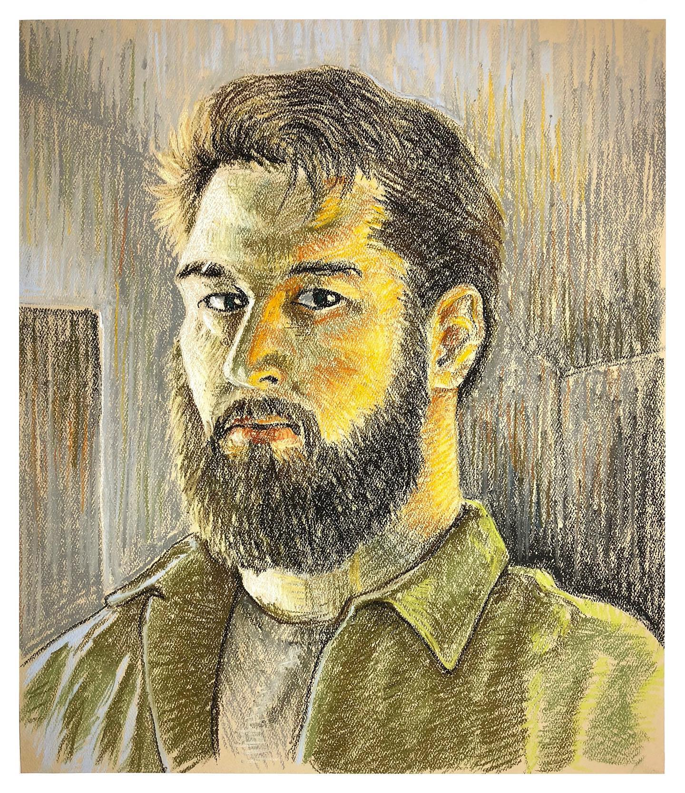

Among my hobbies are illustration and digital painting. This drawing was the final assignment in a Figure Drawing class that I took a few years ago. We were tasked with creating a self-portrait in the style of Edgar Degas' pastel portraits.
Additionally, I enjoy reading, film and television, and occasionally videos games.
I am also slowly collecting the first 30 years of X-Men comics, which I grew up reading.